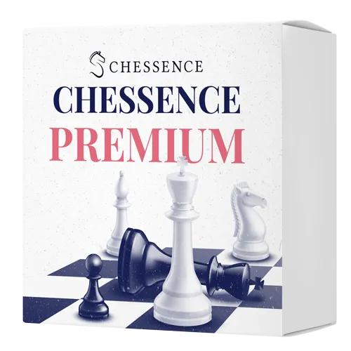
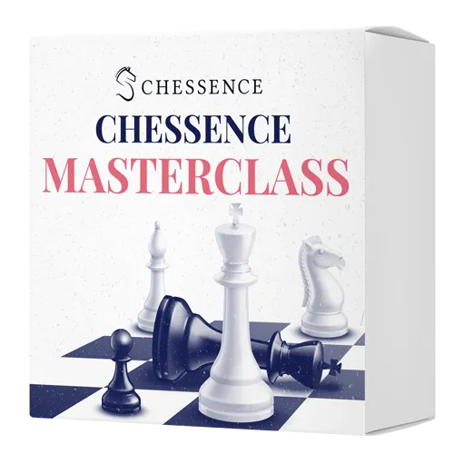
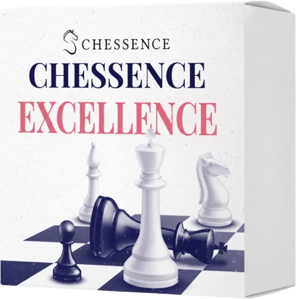
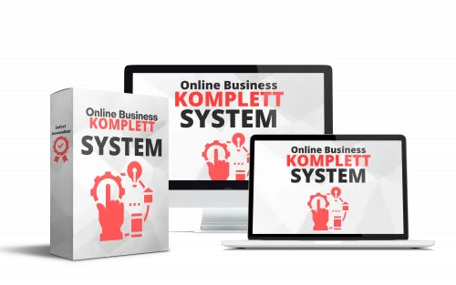

Die Chessence Premium-Mitgliedschaft
Produktprofil · Marktplatz-Daten 2026-10-14 · Verkaufsseiten-Recherche 2026-10-14 · Kategorien: Education
- Die Chessence Premium-Mitgliedschaft ist ein/e Mitgliederbereich & Videokurs in Education, vertrieben über den Digistore24-Marktplatz von Anbieter Chessence, gelistet seit 2026-07-06.
- Listenpreis $121.28 (subscription) — Checkout, Auslieferung und Rückerstattungen laufen über Digistore24 selbst, nicht über den Anbieter.
- Käuferschutz: keine standardisierte Garantie-Formulierung gefunden — Rückerstattungsbedingungen vor der Zahlung auf der offiziellen Seite prüfen.
Interesse an Die Chessence Premium-Mitgliedschaft? Aktueller Preis, Boni und Garantiebedingungen finden Sie auf der offiziellen Seite des Anbieters:
Offizielle Verkaufsseite ansehen
Affiliate-Link (Werbung) — wir verdienen ggf. eine Provision, ohne Mehrkosten für Sie.

Marktplatz-Daten
| Produkttyp | Mitgliederbereich & Videokurs |
|---|---|
| Preis | $121.28 (Subscription) |
| Garantie/Rückgabe | Laut Verkaufsseite des Anbieters — vor dem Kauf auf der offiziellen Seite prüfen |
| Anbieter | Chessence (gelistet seit 2026-07-06) |
Marktplatz-Beschreibung des Anbieters
>> CHESSENCE PREMIUM: HOCHWERTIGES SCHACHTRAINING MIT LIVE FEEDBACK, COMMUNITY UND STARKER ZIELGRUPPE Chessence Premium ist die intensive Mitgliedschaft für ambitionierte Schachspieler, die nicht nur Videokurse konsumieren möchten, sondern regelmäßiges Live Training, individuelles Feedback, Turnierpraxis und eine starke Community suchen. Für Affiliates ist Premium besonders interessant, weil es ein hochwertiges Membership Produkt mit klarer Zielgruppe ist. Es spricht Schachspieler an, die ernsthaft besser werden wollen und bereit sind, regelmäßig in ihr Training zu investieren. >> WARUM PREMIUM FÜR AFFILIATES SPANNEND IST: • Hochwertiges Membership Produkt im Schachmarkt • Klare und kaufbereite Zielgruppe mit echtem Trainingsbedarf • Starke Positionierung durch GM Niclas Huschenbeth • Kombination aus Online Training, Live Feedback und echten Events • Wiederkehrender Nutzen durch wöchentliche Live Trainings • Social Proof durch echte Erfolgsgeschichten und Ratingsprünge • 14 Tage Geld zurück Garantie für weniger Kaufhürden >> WAS PREMIUM BEINHALTET: • Mindestens 16 Live Gruppentrainings pro Monat mit erfahrenen Trainern • 4 Live Seminartage pro Jahr mit GM Niclas Huschenbeth • 4 Wochenend Turniere pro Jahr mit echter Praxiserfahrung • 6 intensive Webinare pro Jahr mit Spitzentrainern • Monatliche Erfolgsgespräche mit IM Dirk Schuh • Zugriff auf die komplette Premium Bibliothek mit über 1000 Stunden Trainingsmaterial • Die komplette Chessence Masterclass ist ebenfalls enthalten • Aufzeichnungen aller Live Events, falls Mitglieder nicht live dabei sein können • Zugang zur Chessence Community >> GEEIGNETER TRAFFIC: • Schach YouTube Kanäle • Schach Newsletter • Schach Blogs und Portale • Instagram, Facebook oder TikTok Seiten rund um Schach • Schachvereine und Turnierspieler • Communities rund um DWZ, Elo, Training und Turniervorbereitung • Zielgruppen, die bereits aktiv trainieren, aber ohne klares System stagnieren Besonders gut funktioniert die Bewerbung bei Spielern, die ernsthaft stärker werden wollen, regelmäßiges Feedback suchen und nicht weiter planlos einzelne YouTube Videos, Bücher oder Datenbankanalysen konsumieren möchten. Starkes Membership Produkt. Klare Zielgruppe. Hoher wahrgenommener Wert. Chessence Premium bietet Affiliates ein hochwertiges digitales Schachprodukt mit Live Training, Expertenstatus, Community, echten Events und einem klaren Nutzenversprechen für ambitionierte Spieler. Die genaue Provision für Affiliates wird direkt im Digistore24 Marktplatz angezeigt.
Von der Verkaufsseite des Anbieters
Seitentitel: Premium • Chessence
Meta-Beschreibung: Exklusives Live-Training mit internationalen Spitzentrainern, klar strukturierten Trainingsplänen und individuellem Feedback.
Hauptüberschrift
Mach in 3 Monaten den Ratingsprung, für den andere 2 Jahre brauchen!
Abschnitts-Überschriften
- Bekannt aus:
- Maximaler Fortschritt in kürzester Zeit
- 3 Gründe, warum Du nicht so schnell besser wirst, wie Du es Dir wünschst
- Das erwartet Dich in der Chessence Premium Mitgliedschaft:
- Premium-Vorteile
- Selbststudium vs. Chessence Premium
- Diese Trainer begleiten Dich
- Dein Premium-Training im Überblick. Klar strukturiert und transparent im Wert/Preis.
- Was unsere Mitglieder mit Chessence erreicht haben
- Häufige Fragen
Einstiegstext
Exklusives Live-Training mit internationalen Spitzentrainern, klar strukturierten Trainingsplänen und individuellem Feedback.
Was wäre, wenn es einen Weg gäbe, der Dich jetzt noch schneller auf das Ratinglevel bringt, das Du Dir gerade wünscht?
Wir bei Chessence haben die letzten Monate damit verbracht, einen Weg zu finden, Deinen schachlichen Erfolg noch einmal kräftig zu beschleunigen.
Die Arbeit mit über 3500 Schülern mit den verschiedensten Spielstärken hat uns gezeigt, dass unser ganzheitlicher Trainingsansatz, den wir mit unseren Kursen verfolgen, extrem effizient ist.
Fragen, die die Verkaufsseite beantwortet
- Was ist alles in der Chessence Premium Mitgliedschaft enthalten?
- Was sind die Themen in den wöchentlichen Live-Trainings?
- Sind alle Live-Trainings auch nachträglich auf Abruf verfügbar?
- Ist es möglich die Premium-Mitgliedschaft kostenlos zu testen?
- Wann finden die wöchentlichen Live-Trainings jeweils statt?
- Wie bekomme ich Zugriff auf die Online-Events?
- Wo finden die Live-Events statt?
- HIER Sind die Live-Events barrierefrei?
- Sind die Live-Events barrierefrei?
Recherche-Methode: rohes HTML · 4288 Wörter · Qualität: rich · recherchiert am 2026-10-14. Vollständige Recherche-Datei (MD) ↗
Wie Produkte dieser Art geliefert werden
Allgemeiner Hinweis zu diesem Produkttyp (keine anbieterspezifische Anleitung): Videokurse laufen über einen Mitgliederbereich: nach dem Checkout erhalten Sie Zugangsdaten per E-Mail und können die Lektionen in Ihrem eigenen Tempo streamen. Für die genaue Anwendung von Die Chessence Premium-Mitgliedschaft sind die offizielle Verkaufsseite und die enthaltenen Materialien maßgeblich.
Gut zu wissen
- Keine Garantie-Formulierung in unserer Recherche gefunden — bestätigen Sie das Rückgabefenster auf der offiziellen Seite, bevor Sie kaufen.
Was ist Die Chessence Premium-Mitgliedschaft?
Die Chessence Premium-Mitgliedschaft ist ein/e mitgliederbereich & videokurs in der Kategorie Bildung des Digistore24-Marktplatzes, veröffentlicht von Anbieter Chessence und im Verkauf seit 2026-07-06. Der Anbieter beschreibt es so: ">> CHESSENCE PREMIUM: HOCHWERTIGES SCHACHTRAINING MIT LIVE FEEDBACK, COMMUNITY UND STARKER ZIELGRUPPE Chessence Premium ist die intensive Mitgliedschaft für ambitionierte Schachspieler, die nicht nur Videokurse konsumieren möchten, sondern regelmäßiges Live Tr" (Marktplatz-Beschreibung des Anbieters, leicht gekürzt).
Die Chessence Premium-Mitgliedschaft Preis: was Sie zahlen
Der Marktplatz listet Die Chessence Premium-Mitgliedschaft zum $121.28 Preis (subscription). Digistore24 fügt im Checkout die gesetzliche Steuer Ihres Landes hinzu — dort sehen Sie den Endbetrag vor der Zahlung. Eine separate Plattformgebühr gibt es nicht; Anbieter können eigene Upsells nach dem Checkout anbieten.
Die Chessence Premium-Mitgliedschaft Rückerstattung und Geld-zurück-Garantie
Wir haben keine standardisierte Garantie-Formulierung auf der Verkaufsseite gefunden. Rückerstattungen für Digistore24-Käufe laufen über die Plattform: Antrag über den Support-Link in Ihrer Bestell-E-Mail, innerhalb des Garantiezeitfensters, das im Checkout angezeigt wird. Praktischer Rat: Entscheiden Sie innerhalb des Fensters — wenn das Produkt unter den Erwartungen bleibt, erstatten lassen statt irren lassen.
Mechanik im Detail: So funktionieren Digistore24-Rückerstattungen.
Für wen ist Die Chessence Premium-Mitgliedschaft geeignet?
Basierend auf der Bildung-Einordnung und der subscription-Abrechnung richtet sich Die Chessence Premium-Mitgliedschaft an Käufer, die bildung-Lösungen suchen und ein Budget für einen Premium-Kauf eingeplant haben. Der ehrliche Test ist nicht die Kategorie, sondern Ihre eigene Situation: Werden Sie es realistisch innerhalb des Garantiefensters nutzen? Wenn ja, ist der Preis eine Investition; wenn nein, ist er Ballast — unabhängig von der Qualität.
Ist Die Chessence Premium-Mitgliedschaft seriös? Was Sie vor dem Kauf prüfen
Wir bewerten keine Seriosität — das kann niemand, ohne das Produkt zu nutzen. Prüfbare Punkte, alle auf dieser Seite: die Marktplatz-Historie des Anbieters (im Verkauf seit 2026-07-06), die wörtlichen Verkaufsseiten-Auszüge unten (gekennzeichnet als Anbieteraussagen — deren Werbung, nicht unsere Empfehlung), die Garantiebedingungen im Checkout und die Auslieferungsart. Vorsichtsignale bei jedem Angebot: Countdown-Dringlichkeit gepaart mit vagen Rückerstattungsbedingungen, Testimonials ohne Datum und Anbieterseiten, die den Preis bis zum Checkout verstecken.
Wie kommen Sie nach dem Kauf an Die Chessence Premium-Mitgliedschaft?
Der Checkout läuft über Digistore24. Nach der Zahlung: Videokurse laufen über einen Mitgliederbereich: nach dem Checkout erhalten Sie Zugangsdaten per E-Mail und können die Lektionen in Ihrem eigenen Tempo streamen. Bewahren Sie die Bestell-E-Mail auf — sie ist Ihr Schlüssel zum/d zur mitgliederbereich & videokurs, zu Rückerstattungsanträgen und zum Digistore24-Käufersupport.
Die Chessence Premium-Mitgliedschaft Erfahrungen: so recherchieren Sie richtig
Die meisten „Erfahrungsberichte" zu Marktplatz-Produkten sind Affiliate-Inhalte — einschließlich Seiten wie dieser, die an Käufen mitverdienen. Behandeln Sie jeden Bericht (auch unseren) als Ausgangspunkt und prüfen Sie gegen Primärquellen: die Verkaufsseite des Anbieters, die Digistore24-Rückerstattungsrichtlinie und — für bildung — unabhängige Communities außerhalb des Affiliate-Ökosystems. Auf dieser Seite sind die Verkaufsseiten-Auszüge unten wörtlich zitiert, damit Sie die Aussagen des Anbieters bewerten können, ohne wegzuklicken.
Wie Sie Die Chessence Premium-Mitgliedschaft sicher kaufen
- Öffnen Sie die offizielle Verkaufsseite und lesen Sie das vollständige Angebot.
- Bestätigen Sie Endpreis und Garantiezeitfenster auf der Digistore24-Kassenseite — sie ist bindend, kein Vergleichsportal.
- Zahlen Sie innerhalb des Digistore24-Checkouts (niemals per Überweisung oder Off-Platform-Links).
- Speichern Sie die Bestellbestätigung; notieren Sie die Rückerstattungsfrist im Kalender.
- Prüfen Sie zügig. Der Digistore24-Käufersupport hilft, wenn der Anbieter nicht reagiert.
Vollständiges Recherche-Archiv für dieses Produkt (Markdown: kompletter Marktplatz-Datensatz + wörtliche Verkaufsseiten-Auszüge): Die Chessence Premium-Mitgliedschaft — vollständiges Datenarchiv (Markdown-Datei: 57431-die-chessence-premium-mitgliedschaft.md).
- Listenpreis & Abrechnung — Quelle: offizielle Digistore24-Marktplatz-API, Stand 2026-10-14. Maßgeblich für den aktuellen Preis ist immer die Kassenseite.
- Verkaufsseiten-Zitate — Quelle: https://chessence.de/premium/, abgerufen 2026-10-14 (Methode: rohes HTML). Verify: offizielle Seite öffnen.
- Garantie / Rückgabe — vom Anbieter festgelegt; vor dem Kauf auf der Verkaufsseite bestätigen.
- Nicht von uns geprüft: Produktqualität, Ergebnisse, Testimonials — kein Praxistest für dieses Listing durchgeführt.
Häufige Fragen zu Die Chessence Premium-Mitgliedschaft
Antworten aus dem Marktplatz-Snapshot (2026-10-14) und der Verkaufsseiten-Recherche (2026-10-14); Anbieteraussagen sind inline gekennzeichnet.
Was ist Die Chessence Premium-Mitgliedschaft?
Die Chessence Premium-Mitgliedschaft ist ein Angebot des Typs „Mitgliederbereich & Videokurs" im Digistore24-Marktplatz, Anbieter: Chessence, gelistet seit 2026-07-06. Eingepflegt unter Bildung. Digistore24 wickelt Checkout, Lieferung und Rückgaben ab.
Wie viel kostet Die Chessence Premium-Mitgliedschaft?
Der Digistore24-Marktplatz listet es für $121.28 (subscription). Preise legt der Anbieter fest und können sich ändern — der Marktplatz-Eintrag oben zeigt den Schnappschuss; die offizielle Verkaufsseite zeigt den aktuellen Preis.
Gibt es eine Geld-zurück-Garantie für Die Chessence Premium-Mitgliedschaft?
Unsere Verkaufsseiten-Recherche hat keine explizite Garantie-Formulierung gefunden. Viele Digistore24-Produkte bieten 60 Tage Geld-zurück, aber das legt jeder Anbieter selbst fest — bestätigen Sie es auf der offiziellen Verkaufsseite, bevor Sie kaufen.
Ist Die Chessence Premium-Mitgliedschaft seriös?
Wir bewerten keine Seriosität — wir veröffentlichen überprüfbare Zahlen: Anbieter Chessence (gelistet seit 2026-07-06), mit der vollständigen Verkaufsseiten-Recherche archiviert auf dieser Seite (Anbieteraussagen als solche gekennzeichnet). Lesen Sie unsere 6-Punkte-Bewertungsmethode und entscheiden Sie anhand der Zahlen — oder diskutieren Sie Die Chessence Premium-Mitgliedschaft auf GitHub.
Wo kann ich Die Chessence Premium-Mitgliedschaft sicher kaufen?
Nur über die offizielle Verkaufsseite, die auf dieser Seite verlinkt ist (Checkout und Rückgaben laufen über Digistore24). Prüfen Sie dort Preis und Garantie vor der Bestellung. Der Link ist ein Affiliate-Link — der Kauf unterstützt diese Website ohne Mehrkosten für Sie.
Wie erhalte ich Die Chessence Premium-Mitgliedschaft nach der Zahlung?
Der Checkout läuft über Digistore24: Nach der Zahlung erhalten Sie Zugangsdaten und Ihr Abo-Dashboard. Lieferdetails für diesen Produkttyp: Videokurse laufen über einen Mitgliederbereich: nach dem Checkout erhalten Sie Zugangsdaten per E-Mail und können die Lektionen in Ihrem eigenen Tempo streamen. Bei Problemen kann der Digistore24-Käufersupport Ihre Bestellung wiederherstellen.
Alle 50 Käuferfragen zu Bildung — das komplette Kategorie-FAQ.
Die Chessence Premium-Mitgliedschaft auf Reddit diskutieren
In Community-Threads vergleichen echte Käufer Erfahrungen. Wir verlinken Communities, keine einzelnen Posts — Threads verschwinden, Subreddits bleiben:
- Reddit-Suche nach „Die Chessence Premium-Mitgliedschaft" — Live-Ergebnisse, von uns nicht beeinflusst.
- Top-„Erfahrungs"-Treffer dieses Jahr — selbst nach Aktualität filtern.
Passendes auf Amazon.de
Physische Produkte und Zubehör, die häufig zusammen mit Die Chessence Premium-Mitgliedschaft gekauft werden:
- Education auf Amazon.de — Top-Ergebnisse, Amazon-Ranking.
- Bestseller: Education — live Liste von Amazon, von uns nicht kuratiert.
Werbung: Als Amazon-Partner verdient DigistorePicks DE an qualifizierten Käufen (Partner-tag adminstorede-21). Amazon setzt eigene Preise und Provisionen (niedrige einstellige Prozente — weit unter den 30–75% der Digistore24-Anbieter). Amazon ist ein Convenience-Angebot für Sachprodukte, kein Ersatz für das digitale Produkt oben.
Ähnliche Angebote in Bildung

ZUGRIFF FÜR ALLE! Jede Person, die ein Arbeitsverhältnis mit Ihnen als Schulgemeinde hat sowie eine E-Mail-Adresse von Ihrer Schule, hat die Zufriffsberechtigun

MATRIXPRINZIP – High-Ticket-Produkt mit bis zu 820,56€ Provision pro Verkauf! Mindset, emotionale Intelligenz und finanzielle Intelligenz – genau die Fähigkeite

Eine bislang noch einzigartige Ausbildung auf dem Markt für eine interessante Zielgruppe! Das Pferdegestützte Coaching auf Basis systemischer Grundlagen erlerne

Für die Teilnehmer ist die Gesamt- oder Teil-Ausbildungen möglich. Empfehle das einzigartige Produkt & verdiene passives Einkommen durch unser effektives Ay
Weitere Angebote von Chessence

>> CHESSENCE MASTERCLASS: DIGITALES SCHACHTRAINING MIT STARKER ZIELGRUPPE UND EXPERTENSTATUS Die Chessence Masterclass ist ein hochwertiges Online Trainin

>> CHESSENCE EXCELLENCE: HIGH LEVEL SCHACHTRAINING FÜR AMBITIONIERTE SPIELER AB 1900 ELO Chessence Excellence ist ein hochwertiges All in One Trainingspro
Ähnliche Preislage in Bildung

Verdiene mindesten 152,12€ PRO Verkauf! NEU: Bewerbe die erste, echte Komplettlösung für das eigene Online Business und verdiene sagenhafte 152€ pro Verkauf + B

P.A.R.A. Kontrolle – Affiliate-Programm Wir suchen professionelle Affiliates mit Erfahrung im Paid Traffic, die langfristig mit einem klar positionierten digita

Kapitel Zwei ist die perfekte Ergänzung für alle, die ihre Bücher professionell erstellen, optimieren und erfolgreich veröffentlichen möchten. In über 20 Module

Elite Travelhacking Living in Hotels Basix Videokurs + Für Urlauber & Einsteiger in das Travelhacking + Aufgenommen in über 30 gehackten Suiten/Flügen/Loung
Ähnliche Suchanfragen
Wo Sie es sich ansehen können
Wo Sie es sich ansehen können
Aktuelle Preise, Garantie und Boni finden Sie auf der offiziellen Verkaufsseite:
Offizielle Verkaufsseite ansehen
Das ist ein Affiliate-Link (Werbung) — kaufen Sie darüber, verdienen wir ggf. eine Provision, ohne Mehrkosten für Sie.
Quellen & weiterführende Informationen
- Offizielle Verkaufsseite (aktueller Preis, Garantie, Boni): chessence.de/premium/ (Affiliate-Link)
- Öffentliche Digistore24-Produktseite: checkout-ds24.com/product/471840
- Vollständige Recherche-Datei (Markdown, versioniert): content/products/57431-die-chessence-premium-mitgliedschaft.md
- Marktplatz-Kategorie: Bildung
Wie wir Produkte wie Die Chessence Premium-Mitgliedschaft bewerten
Sechs Prüfungen, ausschließlich mit offiziellen Marktplatz-Zahlen. Die vollständige Bewertungsmethode lesen · unsere Recherche-Standards & Kennzeichnung.
Fragen oder eigene Erfahrungen mit Die Chessence Premium-Mitgliedschaft?
Praxis-Tests veröffentlichen wir erst, nachdem wir ein Produkt selbst gekauft haben — aber Ihre Erfahrung hilft anderen Lesern: Diskussion zu Die Chessence Premium-Mitgliedschaft auf GitHub starten/verfolgen. Falsche Zahl gefunden? Korrektur melden — jede Seite zeigt ihre Datenstände, Korrekturen gelten für die ganze Website.